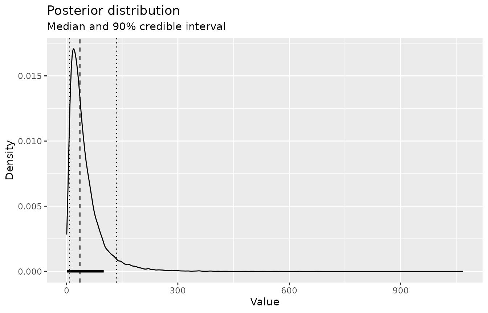

Bayesian Fermi Estimation with `fermi`: The Chicago Piano Tuners Example
chicago-piano-tuners.RmdIntroduction
The fermi package supports Bayesian Fermi estimation:
breaking down uncertain quantities into components (decomposition),
expressing beliefs as probability distributions (priors), and building
uncertainty into the final estimates.
This vignette demonstrates the classic Fermi problem: > How many piano tuners are in Chicago?
We will:
- Decompose the problem.
- Construct expert-driven priors.
- Run a Bayesian Fermi simulation.
- Summarise and visualise the resulting distribution.
How many piano tuners are in Chicago?
If you didn’t have access to data, how would you estimate the number of piano tuners in Chicago? A Fermi estimate breaks the problem into smaller components that can be estimated more easily. We then combine these estimates to get a final answer.
A Bayesian version of this approach encodes uncertainty about each component as a probability distribution (a prior). We then use Monte Carlo simulation to propagate this uncertainty through the calculation, resulting in a probability distribution for the final estimate.
First, we need to decompose the problem by breaking it down into smaller parts.
The decomposition we will use is:
Prior beliefs from expert judgement
Population of Chicago
Belief: 80% probability between 2.5M and 3.5M.
We’ll encode this belief as a gamma prior using the
expert_gamma_prior() function. We are using a gamma
distribution here because the population is a positive count.
population_prior <- expert_gamma_prior(
q = c(2.5e6, 3.5e6),
p = c(0.1, 0.9)
)
#> Warning in expert_gamma_prior(q = c(2500000, 3500000), p = c(0.1, 0.9)):
#> expert_gamma_prior: quantile match may be imprecise. Squared error on q:
#> 2.39e+08 (method = normal, shape ~= 59.1)
population_prior
#> fermi prior
#> Distribution: gamma
#> Source : expert
#> Parameters :
#> $shape
#> [1] 59.12548
#>
#> $rate
#> [1] 1.970849e-05Let’s check expert_gamma_prior() has captured our
beliefs correctly:
Household size
Belief: Mean ≈ 2.7; 80% probability between 2.2 and 3.2.
We’ll encode this belief as a normal prior using the
expert_normal_prior() function. We are using a normal
distribution here because household size can be reasonably approximated
as a continuous variable.
hh_size_prior <- expert_normal_prior(
mean = 2.7,
lower = 2.2,
upper = 3.2,
level = 0.8
)
hh_size_prior
#> fermi prior
#> Distribution: normal
#> Source : expert
#> Parameters :
#> $mean
#> [1] 2.7
#>
#> $sd
#> [1] 0.3901521Fraction of households with a piano
Belief: 80% probability between 2% and 8%.
We’ll encode this belief as a beta prior using the
expert_beta_prior() function. We are using a beta
distribution here because the fraction is a probability between 0 and
1.
piano_frac_prior <- expert_beta_prior(
q = c(0.02, 0.08),
p = c(0.1, 0.9)
)
piano_frac_prior
#> fermi prior
#> Distribution: beta
#> Source : expert
#> Parameters :
#> $shape1
#> [1] 3.623535
#>
#> $shape2
#> [1] 72.7708Let’s check expert_beta_prior() has captured our beliefs
correctly:
Tunings per piano per year
Belief: Most pianos tuned every 1–3 years ⇒ 0.3–1.0 tunings/year.
We’ll encode this belief as a gamma prior using the
expert_gamma_prior() function. Again, we use a gamma
distribution because the number of tunings is a positive count.
tunes_per_piano_prior <- expert_gamma_prior(
q = c(0.3, 1.0),
p = c(0.1, 0.9)
)
tunes_per_piano_prior
#> fermi prior
#> Distribution: gamma
#> Source : expert
#> Parameters :
#> $shape
#> [1] 4.890221
#>
#> $rate
#> [1] 7.851207Working days per year
Belief: Mean ≈ 230; 90% probability between 180 and 280.
We’ll encode this belief as a normal prior using the
expert_normal_prior() function. We are using a normal
distribution here because the number of working days can be reasonably
approximated as a continuous variable.
work_days_prior <- expert_normal_prior(
mean = 230,
lower = 180,
upper = 280,
level = 0.9
)
work_days_prior
#> fermi prior
#> Distribution: normal
#> Source : expert
#> Parameters :
#> $mean
#> [1] 230
#>
#> $sd
#> [1] 30.39784Tunings per tuner per day
Belief: 80% probability of between 2 and 5 tunings per tuner per day.
We’ll encode this belief as a gamma prior using the
expert_gamma_prior() function. Again, we use a gamma
distribution because the number of tunings is a positive count.
tunes_day_prior <- expert_gamma_prior(
q = c(2, 5),
p = c(0.1, 0.9)
)
tunes_day_prior
#> fermi prior
#> Distribution: gamma
#> Source : expert
#> Parameters :
#> $shape
#> [1] 8.187309
#>
#> $rate
#> [1] 2.40024Simulate the number of piano tuners (with uncertainty)
With our priors in place, we can now simulate over all components.
The function passed to bf_fermi_simulate() mirrors the
decomposition above.
tuner_draws <- bf_fermi_simulate(
components = list(
pop = population_prior,
hh_size = hh_size_prior,
piano_frac = piano_frac_prior,
tunes_per_piano = tunes_per_piano_prior,
work_days = work_days_prior,
tunes_day = tunes_day_prior
),
fun = function(
population,
hh_size,
piano_frac,
tunes_per_piano,
work_days,
tunes_day
) {
(population / hh_size) *
piano_frac *
tunes_per_piano /
(work_days * tunes_day)
},
n_draws = 20000
)Summarise the result
We’ll summarise the results of the simulation (the posterior
distribution) using posterior_summary().
tuner_summary <- posterior_summary(tuner_draws, cred_level = 0.89)
tuner_summary
#> Posterior summary
#> Credible level: 89 %
#> Median : 36.31656
#> CI : [8.606157, 129.9963]
#> HDI : [1.717152, 96.42675]Based on our beliefs, and our uncertainty about them, we estimate there are around 36 piano tuners in Chicago, with a 89% credible interval from about 9 to 130.
Visualise the result
Finally, take a quick look at the posterior distribution. The dashed line marks the median; dotted lines are the 90% credible interval.
plot_posterior(tuner_draws, cred_level = 0.9)
Conclusion
This vignette showed how to:
- Decompose a Fermi problem,
- Construct expert-driven Bayesian priors,
- Simulate the resulting distribution using
bf_fermi_simulate(), - Summarise and plot the implied number of piano tuners.
The same workflow applies to any Bayesian Fermi estimation task: break the problem into factors, elicit priors, and let simulation propagate the uncertainty.
This package also lets you fit priors to actual data, using
fit_beta_prior(), fit_gamma_prior() and
fit_normal_prior(). You can also update priors (e.g. based
on expert beliefs) with data using conjugate Bayesian updating functions
like beta_binom_posterior() and
gamma_poisson_posterior(). See the package documentation
for more details.